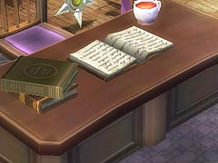
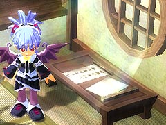
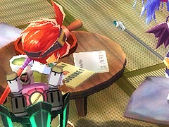

目次 > ゲームについて > 日本Falcom 攻略 > ZWEI II > 情報
らんの眼
ZWEI II (ツヴァイ 2、ZWEI II Plus)
| 概要 | 情報 | 攻略チャート |
| フード交換 | ペットについて | ボス戦 |
| 敵キャラ一覧 | ハンターランク | G-コロッセオ |
| アイテム一覧 | ガジェット一覧 | トレジャー一覧 |
| ダンジョン一覧 | クリアデータ特典 | Plusの追加要素 |
| ZWEI II攻略へ | 目次へ戻る |
| [ 1 ] [ 2 ] [ 3 ] [ 4 ] [ 5 ] [ 6 ] [ 7 ] |
| ブレードギアの影 |
| 細かいところですが、ラグナがブレードギアを装備しているとき、ブレードギアの影の部分が緑色に光っています。 |
| フィギュアについて |
| G-コロッセオで見ることができる魔物のフィギュアですが、「ぱさらん」のフィギュアがなぜか「けさらん」になっています。 また、「くまこぷたー」のフィギュアだけ常に尻尾が回転していて、とても目立ちます。 |
| 浮遊 |
| ルナ＝ムンドゥスにある紫色の球体の影響で宙に浮いた状態で、攻撃もしくは、魔法を撃つと操作中のキャラが移動時に足を動かさなくなり、まるで浮遊しているような状態になります。 この現象は、着地するか、パートナーと交代すると解除されます。 |
| ブレードギアで2 段ヒット攻撃 |
| 敵と密接した状態でブレードギアで通常攻撃をすると、2 段ヒットとなります。1 発目は通常通りのダメージで、2 発目は1 発目の約半分のダメージとなります。 |
| 死ぬまで自爆 |
| 「レベルプレートG」を使ってからダンジョンへ入ったり、夢幻迷宮へ挑戦したりすると、高いレベルのあーけろんが出現します。 あーけろんは本来、体力がある程度減ると自爆して死亡するのですが、レベルが高いために1 度自爆しても死なない場合があります。すると、数秒後に2 度目の自爆を行って死亡します。 おそらく、死ぬまで自爆を繰り返すようにプログラムが組んであるのでしょう。  |
| 文章色々 |
| 1.魔女の家、フィオナの机、村長の家にある本の内容 お休みのKiss はまだ 夜明けまでに荷物まとめて Door をそっと開ければいつものように星空に月が笑う 窓には指で書いた好きと(sukitor?)書き置き残し Door をそっと閉じれば思い出だけが流れる夜霧になって  2.テンザンの部屋の習字紙 世界が平和でありますように  3.スバルの部屋の本 忍者馬鹿一代 花散里是盛 SAMURAI NO SUSUME !  4.大浴場 湯上がりはキンキンに冷えたビン牛乳を一気飲みするのがお約束です腰に手を当て天を仰いでゴクゴク飲みましょう 5.ヒコメの店の張り紙 緑汁はお子様も安心して飲める健康飲料ですがドロっとした喉越しがくせになったお客様はより濃厚な超緑汁をどうぞ 6.カイの家にある謎の日記 今日の献立は、びいふすとろがのふにしました。お肉がトロトロと柔らかく改心の出来だったと思います。明日はばえりやに挑戦です。 ばえりやは失敗です。魚介の下ごしらえが上手く行かなかったようで、生臭さが漂う一品になってしまいました。 きっと初鰹を入れたせいね。 7.不明 夜の散歩は刺激的です冴えた空気を吸ってそぞろ歩くだけでも価値ありだからこの夜用データも無駄じゃないんだい トマト 506z アスパラ 224z パンプキン 148z オリーブ 426z 今日の献立はおいしいおいしい野菜煮込みで大成功 ヘレナ カジキ 813z ブリ 143z マツタケ 1348z トロ 726z お米の使いすぎ これじゃ今月の予算がなくなっちゃうよ。 ヘレナ |
| [ 1 ] [ 2 ] [ 3 ] [ 4 ] [ 5 ] [ 6 ] [ 7 ] |
| 概要 | 情報 | 攻略チャート |
| フード交換 | ペットについて | ボス戦 |
| 敵キャラ一覧 | ハンターランク | G-コロッセオ |
| アイテム一覧 | ガジェット一覧 | トレジャー一覧 |
| ダンジョン一覧 | クリアデータ特典 | Plusの追加要素 |
| ページの上部へ | ZWEI II 攻略へ | 目次へ戻る |